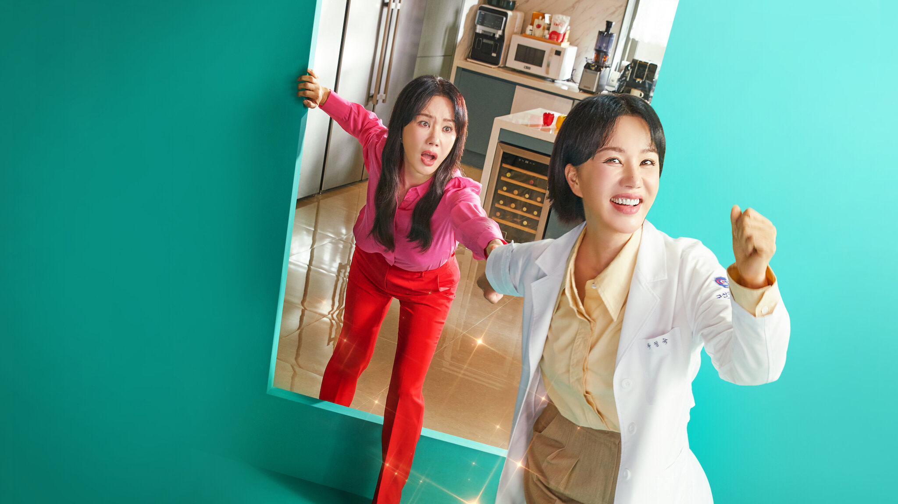

닥터 차정숙
2023 | 15+ | 시즌 1개 | 드라마 장르
의사직을 포기하고 가정주부로 살다가 20년 만에 1년차 레지던트로 돌아온
여자. 놀라운 일투성이인 병원에서 어떻게서든 적응해 보려는 그녀의
고군분투기가 펼쳐진다.
주연 : 엄정화, 김병철, 명세빈
크리에이터 : 김대진 정여랑
무제한으로 즐기세요
영상
| 닥터 차정숙
시즌 1 <티저 예고편>: 닥터 차정숙
회차
| 닥터 차정숙
닥터 차정숙
공개일 : 2023
의사직을 포기하고 가정주부로 살다가 20년 만에 1년차 레지던트로 돌아온 여자. 놀라운 일투성이인 병원에서
어떻게서든 적응해 보려는 그녀의 고군분투기가 펼쳐진다.
어떻게서든 적응해 보려는 그녀의 고군분투기가 펼쳐진다.
-
1. 1화
62분우연히 깜짝 놀랄 사건을 목격한 차정숙은 혼란스러운 와중에 꼼짝 없이 얼어붙고 만다. 얼마 뒤 차정숙이 무서운 진단을 받자, 서인호는 당혹감에 휩싸이는데. -
2. 2화
60분죽을 고비를 넘기고 살아 돌아온 정숙. 이제 인생을 다르게 살겠노라 결심하고, 의욕적으로 새 일을 시작하며 독립을 선언한다. -
3. 3화
62분정숙이 레지던트에 합격하자 인호와 최승희는 크게 동요한다. 새로운 역할에 적응하려 애쓰는 정숙. 하지만 사방에서 거센 반대에 부딪히는데. -
4. 4화
64분다사다난했던 회식 이후 로이킴과 더 가까워지는 정숙. 그런 둘의 모습이 인호에겐 무척 거슬리는데. 정숙의 병원 생활은 여전히 혼란의 연속이다. -
5. 5화
60분정숙과 인호 사이를 두고 병원 내에 모종의 소문이 돈다. 정숙을 마구 몰아대며 시련을 안기는 승희. 이에 정숙은 자신이 과연 의사 일에 맞는 사람인지 회의가 든다. -
6. 6화
62분따로 지목되어 큰 칭찬을 받은 정숙. 하지만 인호에게는 하찮은 취급을 받을 뿐이다. 로이는 인호의 행동을 지적하는 한편, 정숙에게는 친근하게 대한다. -
7. 7화
61분정숙은 딸 문제로 인호와 의견 충돌을 일으키고, 얼마 뒤에는 아들이 누군가와 사귀는 흔적을 발견한다. 한편, 승희는 로이를 찾아가 최근 그가 알게 된 사실을 대놓고 거론하는데. -
8. 8화
62분비밀이 들통나자 크게 당황하는 인호. 양쪽에서 정반대의 부탁을 받은 로이는 어려운 결정에 직면한다. 그 사이 정숙은 서서히 퍼즐을 맞추며 진실에 가까워지고. -
9. 9화
60분마침내 인호의 비밀을 눈치챈 정숙. 이때부터 평소와 달리 별난 행동을 보이는데. 승희는 자신을 찾아온 인호 모친과 만난 뒤 응급 상황을 맞닥뜨린다. -
10. 10화
60분숨겨 온 사실이 병원 사람들에게 알려지면서 정숙의 입장이 무척 곤란해진다. 승희는 인호에게 앞으로 어떻게 할 건지 따져 묻고, 전소라는 정숙에게 천금 같은 위로를 건넨다. -
11. 11화
60분정숙은 한계점에 다다른 상태로 승희와 인호를 대면한다. 얼마 뒤, 복잡한 감정에 휩싸인 로이와 인호가 한판 크게 맞붙는데. -
12. 12화
60분자기 자리에서 물러서지 않겠다면서 인호와 설전을 벌이는 승희. 서정민은 참담한 일을 겪은 뒤 걷잡을 수 없이 무너진다. 정숙은 마침내 단호한 결단에 이르고. -
13. 13화
61분마음을 굳힌 정숙은 인호의 끈질긴 만류에도 불구하고 자신의 결정을 밀어붙이려 한다. 로이는 가족에 관한 진실을 찾아 나선다. -
14. 14화
63분결국 진실을 알게 된 정숙의 모친. 여전히 건강 문제도 해결해야 하는 상황인데. 승희는 열심히 치료법을 찾고, 인호는 정숙의 뜻에 반해 고집을 부린다. -
15. 15화
60분충격적인 소식을 듣는 정숙. 어쩌면 의사 생활을 그만둬야 할지도 모르는데. 인호의 모친은 코앞에 닥친 상황에 겁을 집어먹고, 인호까지 난감한 처지로 몰아넣는다. -
16. 16화
62분주변 사람들 모두가 걱정하는 가운데, 정숙은 수술에 앞서 남은 일들을 깨끗이 매듭짓는다. 물론 미래를 준비하는 것도 잊지 않는다.
상세 정보
오프라인 시청
장르
시리즈 특징:
음성/더빙
자막
저장 기능은 광고 없는
멤버십에서만 이용 가능합니다.
멤버십에서만 이용 가능합니다.
메디컬 시리즈,드라마,한국 드라만
진심 어린
English, Japanese - Audiio Description,
Korean [Original]
Korean [Original]
English,English,Japanese,Korean
출연
엄정화
김병철
명세빈
민우혁
함께 시청된 콘텐츠


공개 임박
메니페스트
사냥개들
바비의 인어 공주 이야기
레지던트 이불 2
리키줌
비행기가 착륙하니 세계는 불가사의하게도
이미 수년이 지나있고, 시간의 흐름이
캄승객들만 비껴간 것 같다. 도착한 승객들은
기이한 새로운 현실과 마주한다.
이미 수년이 지나있고, 시간의 흐름이
캄승객들만 비껴간 것 같다. 도착한 승객들은
기이한 새로운 현실과 마주한다.
두 청년 복서가 선한 대부업자와 한뜻으로
뭉친다. 돈 때문에 절박한 약자들을 먹잇감
삼는 악랄한 사채업자에 대적하기 위해.
뭉친다. 돈 때문에 절박한 약자들을 먹잇감
삼는 악랄한 사채업자에 대적하기 위해.
자신이 인어라는 사실을 알게 된 소녀 멀리아.
서핑 챔피언인 멀리아는 돌고래의 도움을 받아
오세아나의 여왕인 엄마를 구해야 한다!
서핑 챔피언인 멀리아는 돌고래의 도움을 받아
오세아나의 여왕인 엄마를 구해야 한다!
죽음의 바이러스가 확산되자 봉쇄에 들어간
라쿤 시티. 좀비와 함께 그곳에 갇힌 앨리스와
엘리트 군단은 새로운 악의 등장을 마주한다.
라쿤 시티. 좀비와 함께 그곳에 갇힌 앨리스와
엘리트 군단은 새로운 악의 등장을 마주한다.
리키 줌과 단짝 바이크 친구들이 바이크 마을
휠포드를 쌩쌩 달려요. 구조 임무도 해내고
빠르게 움직이는 스턴트도 배운답니다.
우리도 함께 신나게 달려볼까요!
휠포드를 쌩쌩 달려요. 구조 임무도 해내고
빠르게 움직이는 스턴트도 배운답니다.
우리도 함께 신나게 달려볼까요!
아놀드
러브 데스티나: 더 무비
뷰티풀 라이프
보디빌딩 챔피언부터 시작해 할리우드
아이콘을 거쳐 정치인이 되기까지, 아놀드
슈워제네거의 다각적인 삶과 커리어를 따라가는
내밀한 다큐시리즈.
아이콘을 거쳐 정치인이 되기까지, 아놀드
슈워제네거의 다각적인 삶과 커리어를 따라가는
내밀한 다큐시리즈.
다른 생에서 사랑했던 여인을 꿈에서 본 한
남자. 그녀를 다시 만나게 될 운명이라고
믿는다. 하지만 정체를 알 수 없는 시간 여행자가
나타나 그의 계획을 방해한다.
남자. 그녀를 다시 만나게 될 운명이라고
믿는다. 하지만 정체를 알 수 없는 시간 여행자가
나타나 그의 계획을 방해한다.
남다른 재능을 숨기고 살던 청년 어부가 어느
날 한 음악 프로듀서의 눈길을 끈다. 그의
앞에서 손짓하는 스타덤과 사랑. 그는 이 새로운
길에 뛰어들 준비가 되었을까?
날 한 음악 프로듀서의 눈길을 끈다. 그의
앞에서 손짓하는 스타덤과 사랑. 그는 이 새로운
길에 뛰어들 준비가 되었을까?